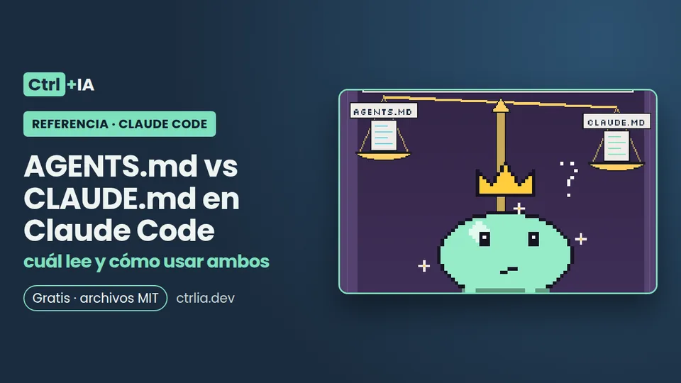

Referencia · Intermedio · 10 min
AGENTS.md vs CLAUDE.md en Claude Code: cuál lee y cómo usar ambos
Desde la 2.1.277 Claude Code lee AGENTS.md si no hay CLAUDE.md. Qué lee en cada caso, la trampa de CLAUDE.local.md y un solo archivo para todas tus IAs.

Probado con Claude Code 2.1.316 · revisado
Ver los archivos en GitHub Gratis · licencia MIT
Resumen
Desde la 2.1.277 (18-sep-2026) Claude Code lee AGENTS.md, el archivo de instrucciones que usan Codex, Cursor y otros agentes, cuando el proyecto no tiene CLAUDE.md. Si tienes los dos, por defecto solo lee CLAUDE.md, y un CLAUDE.local.md personal basta para que ignore AGENTS.md.
Esta referencia explica qué lee en cada combinación, cómo cambiarlo en /config > Project instructions, cómo tener un único archivo para todas tus IAs, cómo migrar desde Codex o Cursor y cómo comprobar qué se cargó. Para escribir un buen CLAUDE.md, mira la receta CLAUDE.md que funciona.
Qué cambió y qué lee Claude según tus archivos
AGENTS.md es un archivo de instrucciones de proyecto que comparten varios agentes de programación. Pedir que Claude Code lo leyera fue la issue más votada de su historia (#6235, 6689 reacciones) y llegó en la 2.1.277: «en un proyecto sin CLAUDE.md, Claude Code lee AGENTS.md en su lugar». La regla por defecto, según la doc oficial:
| Qué tienes en tu carpeta o por encima | Qué lee Claude |
|---|---|
| AGENTS.md y ningún CLAUDE.md ni CLAUDE.local.md | Tu AGENTS.md |
| AGENTS.md y además un CLAUDE.md o CLAUDE.local.md | Solo tus CLAUDE.md |
Un CLAUDE.md que importa AGENTS.md con @AGENTS.md | El CLAUDE.md con AGENTS.md incluido por la importación |
Lo que cuenta para esa comprobación: CLAUDE.md, .claude/CLAUDE.md o CLAUDE.local.md en tu carpeta o cualquiera superior. Lo que no cuenta y se sigue cargando junto a AGENTS.md: tu ~/.claude/CLAUDE.md, el CLAUDE.md gestionado de tu organización y los archivos de .claude/rules/. Necesitas la 2.1.277 o posterior; mira la tuya con claude --version.
La trampa del CLAUDE.local.md
Muchos equipos tienen el AGENTS.md en git y cada persona añade un CLAUDE.local.md para sus notas privadas (URLs de prueba, datos de ejemplo). Como CLAUDE.local.md cuenta como CLAUDE.md, en cuanto lo creas Claude deja de leer el AGENTS.md del equipo, sin avisarte.
Lo comprobamos con un AGENTS.md que decía «la palabra clave es MANZANA»: sin nada más, Claude respondió MANZANA; tras crear un CLAUDE.local.md de una línea, respondió NINGUNA. Esta es la prueba, para repetirla en una carpeta de pruebas con un modelo barato:
# Prueba reproducible (en una carpeta de pruebas, con un modelo barato)
mkdir -p /tmp/prueba-agents && cd /tmp/prueba-agents && git init -q
printf '# Reglas del proyecto\nLa palabra clave del proyecto es MANZANA.\n' > AGENTS.md
P="Responde solo con la palabra clave del proyecto según tus instrucciones de proyecto, o NINGUNA si no tienes."
# 1) Solo AGENTS.md → lo lee
claude -p --model haiku "$P" # MANZANA
# 2) Añado un CLAUDE.local.md → deja de leer AGENTS.md
echo 'Prefiero respuestas cortas.' > CLAUDE.local.md
claude -p --model haiku "$P" # NINGUNA
# 3) Quito el local y creo un CLAUDE.md que lo importa → vuelve a leerlo
rm CLAUDE.local.md
printf '@AGENTS.md\n\n## Claude Code\nUsa plan mode para cambios grandes.\n' > CLAUDE.md
claude -p --model haiku "$P" # MANZANAHay dos salidas. La primera, poner Project instructions en claude-md-and-agents-md (siguiente sección), que carga ambos. La segunda, importar AGENTS.md desde tu archivo local o desde un CLAUDE.md del proyecto con @AGENTS.md.
Lo mismo pasa si alguien sube un CLAUDE.md al repo o si hay uno en una carpeta superior (por ejemplo, en tu carpeta de trabajo general): Claude busca CLAUDE.md, .claude/CLAUDE.md y CLAUDE.local.md en todo el camino hasta la raíz, salvo el de ~/.claude/.
/config > Project instructions: los cuatro valores
Escribe /config en una sesión y busca Project instructions:
| Valor | Qué carga |
|---|---|
claude-md-or-agents-md (por defecto) | Tus CLAUDE.md, o tus AGENTS.md cuando no hay CLAUDE.md ni CLAUDE.local.md |
claude-md-and-agents-md | Ambos juntos: en cada carpeta, primero los CLAUDE.md y después su AGENTS.md. No carga dos veces un AGENTS.md que ya importó o enlaza tu CLAUDE.md |
claude-md | Solo CLAUDE.md |
managed-only | Solo el CLAUDE.md gestionado de la organización y la memoria automática al arrancar; deja fuera los CLAUDE.md de proyecto, locales y de usuario, .claude/rules/ y todo AGENTS.md (los de subcarpetas y las reglas con paths siguen cargándose bajo demanda) |
El cambio vale desde tu siguiente mensaje y en cada sesión nueva. También puedes fijarlo en un archivo: en pluginConfigs, bajo cc-plugin-agents-md@builtin (el plugin integrado que lee AGENTS.md), con instructionFiles. Por ejemplo, en ~/.claude/settings.json, para leer siempre CLAUDE.md y AGENTS.md:
{
"pluginConfigs": {
"cc-plugin-agents-md@builtin": {
"options": { "instructionFiles": "claude-md-and-agents-md" }
}
}
}Solo se lee desde ~/.claude/settings.json, --settings o la configuración gestionada; en los settings de proyecto se ignora. Antes de la 2.1.285 el identificador era agents-md@builtin; las versiones nuevas aceptan los dos. El panel de /config no lo probamos nosotros: los valores salen de la doc oficial.
Cuándo se carga y en qué subcarpetas
Al iniciar la sesión, Claude carga cada AGENTS.md y .claude/AGENTS.md de tu directorio de trabajo y de las carpetas superiores. En una sesión interactiva verás una línea como no CLAUDE.md found; AGENTS.md loaded: /home/tu/repo/AGENTS.md.
Mientras trabaja, el AGENTS.md de una subcarpeta se añade cuando Claude abre con la herramienta Read un archivo de esa subcarpeta y esa subcarpeta no tiene ninguno de los tres CLAUDE.md propios. Es útil en monorepos: apps/web/AGENTS.md y apps/api/AGENTS.md con reglas distintas. La 2.1.290 arregló que el AGENTS.md de una subcarpeta no se adjuntaba al mencionar con @ un archivo de dentro.
Dentro de cada AGENTS.md se expanden las importaciones @ruta y se aplican los patrones de claudeMdExcludes. Los subagentes que arrancan sin instrucciones de proyecto (como los integrados Explore y Plan) arrancan también sin AGENTS.md. Antes de la 2.1.281, algunas sesiones (Bedrock, Vertex, Foundry, gateways o con la telemetría apagada) no leían AGENTS.md: fue el hilo de 486 puntos en HN. Actualiza si estás por debajo.
Ni la línea de carga en pantalla ni la carga en subcarpetas las comprobamos nosotros; salen de la doc oficial y del CHANGELOG.
Un solo archivo para todas tus IAs
Si en tu equipo conviven Claude Code, Codex y Cursor, haz de AGENTS.md la fuente de verdad: comandos de build y test, convenciones, estructura. Para lo específico de Claude (usar plan mode en cierta carpeta, una skill), crea un CLAUDE.md junto a él que empiece con @AGENTS.md y añada debajo lo propio:
@AGENTS.md
## Claude Code
Usa plan mode para cambios en src/billing/.Claude lee primero el archivo importado y después el resto. Esta es la opción más robusta: funciona aunque tengas un CLAUDE.md, aunque alguien ponga Project instructions en claude-md y en sesiones que no pueden leer AGENTS.md directamente. Mantener la importación nunca hace que se lea dos veces.
Si no necesitas nada específico de Claude, vale un enlace simbólico:
# Alternativa sin contenido propio de Claude: enlace simbólico (no en equipos con Windows)
ln -s AGENTS.md CLAUDE.mdTiene dos pegas: las herramientas Edit y Write se niegan a escribir a través del enlace y Claude edita AGENTS.md en su lugar; y en Windows crear enlaces requiere permisos de administrador o el modo desarrollador, y git los descarga como un archivo de texto de una línea si core.symlinks no está activo. Con cualquiera de las dos opciones, comprueba en la siguiente sesión con /context que CLAUDE.md aparece en «Memory files».
Si ya tenías un apaño antes de la 2.1.277
Mucha gente montó su propia solución mientras no había soporte. La doc oficial dice qué hacer con cada una:
| Tu apaño | Qué hacer |
|---|---|
Un CLAUDE.md que contiene @AGENTS.md | Déjalo: nunca duplica la carga. Bórralo solo si no contiene nada más y todas tus sesiones pueden leer AGENTS.md |
| Un CLAUDE.md que dice con palabras «lee AGENTS.md» | Claude solo lo ve si decide abrir el archivo: bórralo para que lea AGENTS.md directamente o cambia la frase por la importación @AGENTS.md |
| Un CLAUDE.md enlazado a AGENTS.md | Nada: el contenido se lee una vez |
| Un hook SessionStart que imprime AGENTS.md | Quítalo: ahora que Claude lo lee solo, el hook mete una segunda copia en el contexto y gasta tokens en cada sesión |
Diferencias que conviene conocer de un AGENTS.md leído por el ajuste frente a un CLAUDE.md: no dispara los hooks InstructionsLoaded, no se carga desde carpetas añadidas con --add-dir aunque tengas CLAUDE_CODE_ADDITIONAL_DIRECTORIES_CLAUDE_MD, y una importación de fuera del proyecto solo se carga si ya aprobaste importaciones externas, sin preguntarte.
Vienes de Codex o Cursor: migrar y comprobar
Si traes configuración de otra herramienta, /import acepta codex, gemini o cursor y trae a Claude Code los archivos de instrucciones, servidores MCP, comandos, subagentes y skills; con --dry-run ves qué traería sin escribir nada. Ojo: añade una copia única de archivos como AGENTS.md al CLAUDE.md correspondiente, así que a partir de ahí tienes dos archivos que mantener; si quieres uno solo, mejor la importación @AGENTS.md. La versión en la que llegó /import no aparece en el CHANGELOG.
/init, al generar un CLAUDE.md inicial, ya lee las reglas de Cursor (.cursor/rules/ o .cursorrules) y las de Copilot (.github/copilot-instructions.md); con CLAUDE_CODE_NEW_INIT=1 también AGENTS.md, .windsurfrules, .clinerules y las reglas de Devin.
# ¿Vienes de Codex, Gemini CLI o Cursor? Mira primero qué traería (sin escribir nada)
/import codex --dry-run
/import cursor --dry-run
# Copia única de instrucciones (p. ej. AGENTS.md → CLAUDE.md), MCP, comandos, subagentes y skills
/import codex
# /init también lee .cursor/rules/, .cursorrules y .github/copilot-instructions.md;
# con esta variable, además AGENTS.md, .windsurfrules, .clinerules…
CLAUDE_CODE_NEW_INIT=1 claude
# Comprobar qué instrucciones cargó la sesión
/memory # lista las rutas de CLAUDE.md / AGENTS.md cargados
/context # sección «Memory files»Para comprobar qué cargó Claude, /memory lista la ruta de cada archivo de instrucciones leído (antes de la 2.1.280 no listaba un AGENTS.md leído directamente). Si no aparece, revisa por orden:
- Un CLAUDE.md o CLAUDE.local.md en el camino.
- Tu versión.
- El valor de Project instructions.
Si ese ajuste ni siquiera aparece en /config, tu sesión no puede leer AGENTS.md (versión vieja, plugin integrado desactivado en /plugin o primera sesión tras actualizar). /import y /memory no los probamos nosotros: salen de la doc oficial de comandos y memoria.
Qué comprobamos
El 1-nov-2026 en Linux con Claude Code 2.1.316, con claude -p --model haiku (3 llamadas): solo AGENTS.md → «MANZANA»; con CLAUDE.local.md → «NINGUNA»; con un CLAUDE.md que contiene @AGENTS.md → «MANZANA». El registro de depuración confirmó el plugin integrado cc-plugin-agents-md. No probamos el panel /config > Project instructions, la línea «AGENTS.md loaded» en pantalla, la carga en subcarpetas, /import ni /memory; esos datos salen de la doc oficial y del CHANGELOG.
Preguntas frecuentes
Si tengo CLAUDE.md y AGENTS.md, ¿cuál gana?
Por defecto solo se lee CLAUDE.md. No es que se fusionen con prioridad: AGENTS.md directamente no se carga. Para usar los dos, importa @AGENTS.md desde el CLAUDE.md o pon Project instructions en claude-md-and-agents-md.
Mi ~/.claude/CLAUDE.md personal, ¿bloquea el AGENTS.md del proyecto?
No. El CLAUDE.md de usuario, el gestionado de la organización y .claude/rules/ no cuentan para esa comprobación y se cargan junto a AGENTS.md. Sí lo bloquean CLAUDE.md, .claude/CLAUDE.md y CLAUDE.local.md en tu carpeta o en las superiores.
¿Puedo fijar Project instructions para todo el equipo en el repo?
No: la entrada pluginConfigs se ignora en los settings de proyecto y locales. Lo robusto para un equipo es un CLAUDE.md en git con @AGENTS.md.
¿Funciona AGENTS.md en Bedrock o con la telemetría apagada?
Desde la 2.1.281 sí (también en Vertex, Foundry y gateways). En versiones anteriores, importa @AGENTS.md desde un CLAUDE.md o actualiza.
¿Tiene AGENTS.md las mismas funciones que CLAUDE.md?
Casi: admite importaciones @ruta y claudeMdExcludes, pero no dispara los hooks InstructionsLoaded ni se carga desde carpetas --add-dir. Las reglas por ruta (.claude/rules/) y la memoria automática son de Claude Code y siguen funcionando aparte. Para ver dónde encaja cada pieza, mira qué pieza usar.
¿Y .cursorrules o .cursor/rules?
Claude Code no los lee en cada sesión. /init los usa para generar tu CLAUDE.md, y /import cursor trae la configuración de Cursor una vez.